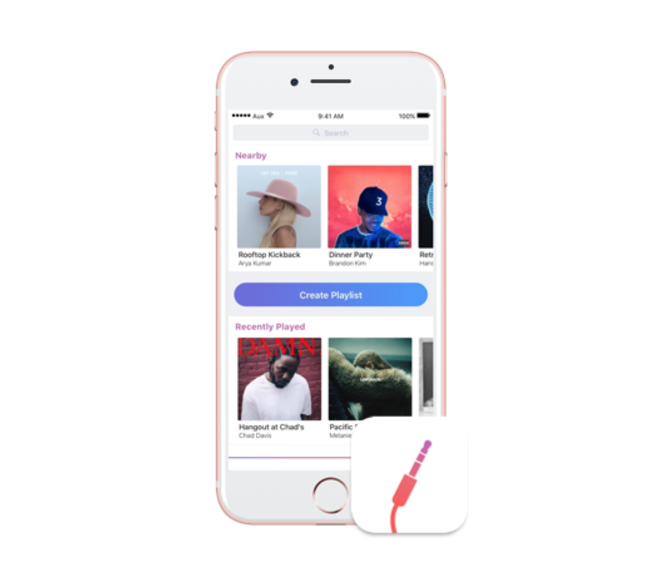
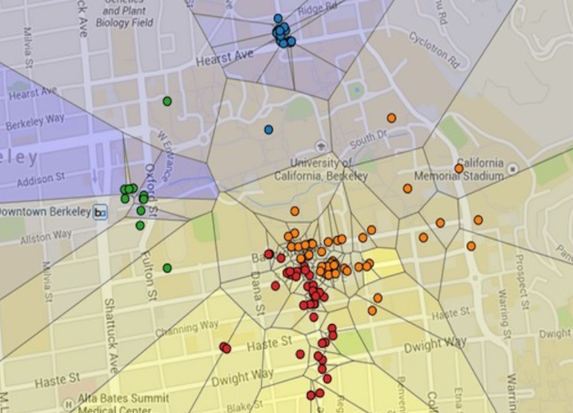
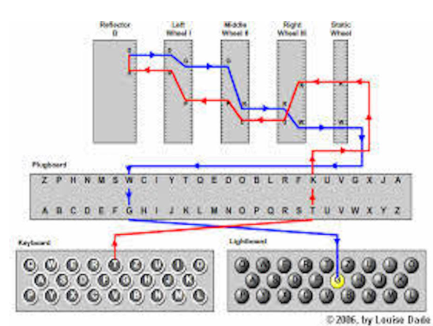
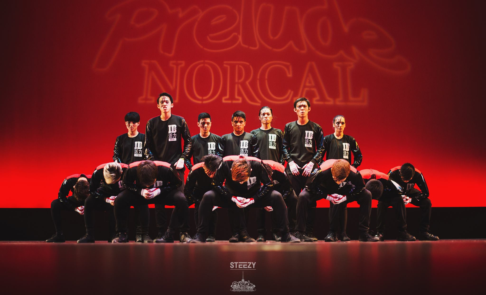

About Me
London is the capital city of England.
Professional Experience
Paris is the capital of France.
Hobbies
Tokyo is the capital of Japan.
JARED GUTIERREZ
ABOUT ME
San Francisco | Berkeley
Welcome! My name is Jared Gutierrez and I'm currently a Junior at the University of California, Berkeley pursuing a degree in Computer Science. I have experience in fullstack web and iOS development. This summer I am working at NVIDIA as a Software Engineering Intern in Santa Clara, CA. My hobbies outside of academics include Hip-Hop choreography, breakdancing, guitar, and tae kwon do.
PROFESSIONAL EXPERIENCE
Software Engineering Intern
NVIDIA CORPORATION
• This summer, I worked on NVIDIA's core software team in Santa Clara, CA as a Software Engineering Intern. I developed an automated command line tool that will assist with the identification and reproduction of computer crashes.
Web / IOS Developer
MOBILE DEVELOPERS OF BERKELEY
• In my year and a half in the organization, I had the opportunity to develop and publish iOS and web applications alongside other developers. I was able to develop skills in HTML, CSS, javascript, and swift.
Data Operations Intern
ALFRESCO SOFTWARE
• In summer 2016 I interned at Alfresco Software where I collaborated with the sales development team and account executives to streamline the sale of the Alfresco One's main software product. I Revised and maintained the accuracy of consumer account data from the US, Canada, and Europe.
Software Engineering Intern
REVSTREAM INC.
• I worked at Revstreams as a software engineering intern where I collaborated with the development team to design and implement features for the upcoming release of their public website. I implemented new features including modal windows, uploading, documents, and visualizations
Academic Intern / Tutor
UC BERKELEY COMPUTER SCIENCE DEPT.
• In my year as an Academic Intern I taught students programming fundumentals and object oriented design for UC Berkeley's introductory CS course. I held one on one tutoring sessions to help prepare students for midterms and finals by reviewing computer science fundamentals
Internal Relations Intern
PILIPINO ASSOCIATION OF ENGINEERS
• I collaborated with other Pilipino organizations on campus aiming to increase Filipino presence in higher education and in STEM industries. I worked along side the Internal Vice President to manage the other components within the organization
EDUCATION
University of California, Berkeley
BACHELOR'S DEGREE, B.A. COMPUTER SCIENCE
2015 - 2019
Coursework
• Structure and Interpretation of Programming (CS 61A)
• Data Structures (CS 61B)
• Discrete Mathematics and Probability Theory (CS 70)
• Linear Algebra and Differential Equations (MATH 54)
• Introduction to Data Science (CS C8)
• Web Design Decal
Skills
Languages: Python, Java, Javascript, HTML, CSS, Jquery, SQL
Experience With: Github, Elasticsearch, LINUX
Abilities: Public Speaking, Leadership Qualities, Communication Skills
PROJECTS




AUX (iOS / Android)
Nov 2016 – Nov 2016
A dual platform mobile application that allows for users to create or join collaborative music playlists anytime and anywhere. Users are connected to a single playlist and push song suggestions to the shared playlist. No need to bother a DJ with song requests or pass an auxiliary cord during social events.
Technologies used: Python
NEWS NOW
January 2017 – June 2017
Project descriptionAnalyzed market data to predict stock trends. Presented users with profitable investment suggestions based on the stock's historical trends.
Technologies used: Python
SINCERELY (IOS)
April 2016 – May 2016
An iOS application that allows users to anonymously send positive messages to other users in your community. Users can reply to received messages, specify their audience radius, and view where their messages have traveled.
Technologies used: Swift, XCode, Adobe Photoshop, Parse
CO-PILOT
November 2016
Developed a web application that provides airlines with consumer search data to major US airports throughout the year so that they can optimize flight scheduling. Utilized Amadeus API to retrieve relevant search data and Google maps API to display search frequency through a heat map.
Technologies used: Amadeus API, Google Maps API, Flask (Python), JQuery, HTML, CSS, JavaScript, Heroku
MAPS
March 2016
Project descriptionAnalyzed market data to predict stock trends. Presented users with profitable investment suggestions based on the stock's historical trends.
Technologies used: Python
ENIGMA
November 2016
Based on the WWII enigma machine, I created a replica by implementing a substitution cypher for data encryption.
Technologies used: Java
FOSTER GROWTH
April 2016
Developed an iOS mobile app that helps foster kids in San Mateo County prepare for the job application process. The application features include sample resumes, links to hiring companies in San Mateo County, practice interview questions, and a resume builder for those without experience
Technologies used: Swift, XCode
STOCK ANALYSIS
November 2015
Analyzed market data to predict stock trends. Presented users with profitable investment suggestions based on the stock's historical trends.
Technologies used: Python
HOBBIES

GUITAR

DANCE

KARATE